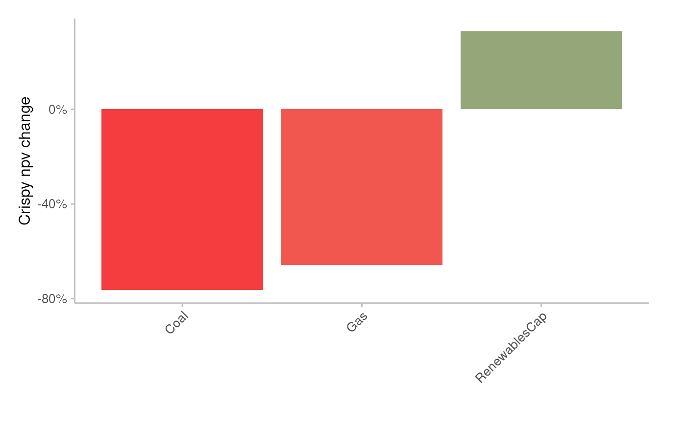
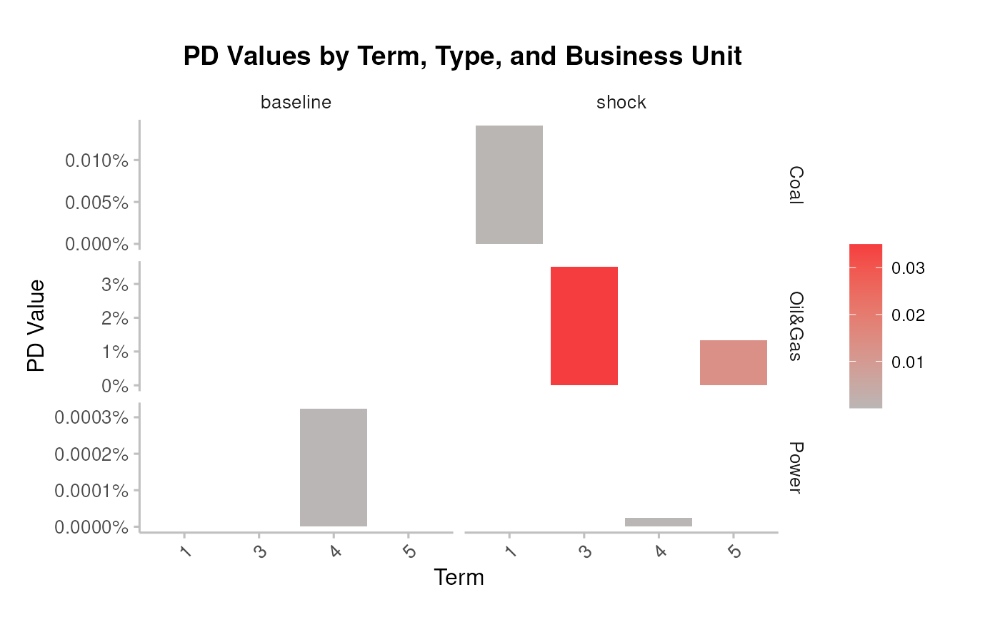
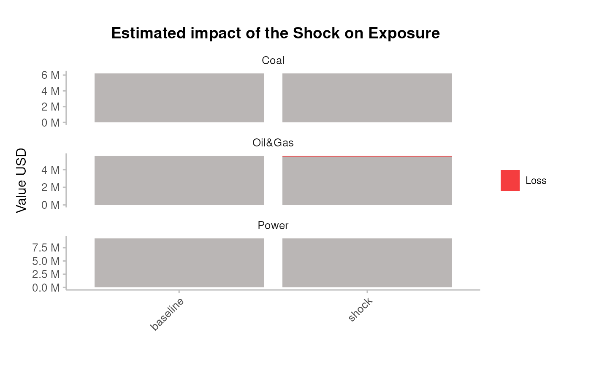

Restrict the analysis to a portfolio
Generate outputs
Load the test data
Load the internal datasets
assets_testdata <- read.csv(system.file("testdata", "assets_testdata.csv", package = "trisk.model", mustWork = TRUE))
scenarios_testdata <- read.csv(system.file("testdata", "scenarios_testdata.csv", package = "trisk.model", mustWork = TRUE))
financial_features_testdata <- read.csv(system.file("testdata", "financial_features_testdata.csv", package = "trisk.model", mustWork = TRUE))
ngfs_carbon_price_testdata <- read.csv(system.file("testdata", "ngfs_carbon_price_testdata.csv", package = "trisk.model", mustWork = TRUE))Prepare portfolio
There are 3 possible portfolio input structures :
portfolio_countries_testdata <- read.csv(system.file("testdata", "portfolio_countries_testdata.csv", package = "trisk.analysis"))
portfolio_ids_testdata <- read.csv(system.file("testdata", "portfolio_ids_testdata.csv", package = "trisk.analysis"))
portfolio_names_testdata <- read.csv(system.file("testdata", "portfolio_names_testdata.csv", package = "trisk.analysis"))Leaving the company_id and company_name columns empty, Trisk results will be aggregated per country and technology, and matched to the portfolio based on those columns.
| company_id | company_name | sector | technology | country_iso2 | exposure_value_usd | term | loss_given_default |
|---|---|---|---|---|---|---|---|
| NA | NA | Oil&Gas | Gas | DE | 1839267 | 3 | 0.7 |
| NA | NA | Coal | Coal | DE | 6227364 | 1 | 0.7 |
| NA | NA | Oil&Gas | Gas | DE | 3728364 | 5 | 0.5 |
| NA | NA | Power | RenewablesCap | DE | 9263702 | 4 | 0.4 |
Filling in the company_name column, will result in an attempt to fuzzy string matching between company names.
| company_id | company_name | sector | technology | country_iso2 | exposure_value_usd | term | loss_given_default |
|---|---|---|---|---|---|---|---|
| NA | Company 1 | Oil&Gas | Gas | DE | 1839267 | 3 | 0.7 |
| NA | Comany 2 | Coal | Coal | DE | 6227364 | 1 | 0.7 |
| NA | Corony 3 | Oil&Gas | Gas | DE | 3728364 | 5 | 0.5 |
| NA | Compan 4 | Power | RenewablesCap | DE | 9263702 | 4 | 0.4 |
Filling in the company_id column, will result in an exact match between companies.
| company_id | company_name | sector | technology | country_iso2 | exposure_value_usd | term | loss_given_default |
|---|---|---|---|---|---|---|---|
| 101 | NA | Oil&Gas | Gas | DE | 1839267 | 3 | 0.7 |
| 102 | NA | Coal | Coal | DE | 6227364 | 1 | 0.7 |
| 103 | NA | Oil&Gas | Gas | DE | 3728364 | 5 | 0.5 |
| 104 | NA | Power | RenewablesCap | DE | 9263702 | 4 | 0.4 |
Using the company ids is recommended to match the portfolio. In our current asset data, a unique asset is defined by a unique combination of company_id, sector, technology, and country. Those other columns are used for the matching between the portfolio and the Trisk outputs.
portfolio_testdata <- portfolio_ids_testdataRun trisk
Run the model with the provided data, after filtering assets on those available in the portfolio.
Define the scenarios to use:
baseline_scenario <- "NGFS2023GCAM_CP"
target_scenario <- "NGFS2023GCAM_NZ2050"
scenario_geography <- "Global"The function run_trisk_on_portfolio() handles the
filtering on portfolio and then runs Trisk:
analysis_data <- run_trisk_on_portfolio(
assets_data = assets_testdata,
scenarios_data = scenarios_testdata,
financial_data = financial_features_testdata,
carbon_data = ngfs_carbon_price_testdata,
portfolio_data = portfolio_testdata,
baseline_scenario = baseline_scenario,
target_scenario = target_scenario,
scenario_geography = scenario_geography
)
#> -- Start Trisk-- Retyping Dataframes.
#> -- Processing Assets and Scenarios.
#> -- Transforming to Trisk model input.
#> -- Calculating baseline, target, and shock trajectories.
#> -- Calculating net profits.
#> Joining with `by = join_by(asset_id, company_id, sector, technology)`
#> -- Calculating market risk.
#> -- Calculating credit risk.Result dataframe :
| company_id | company_name | sector | technology | country_iso2 | exposure_value_usd | term | loss_given_default | run_id | asset_id | asset_name | net_present_value_baseline | net_present_value_shock | net_present_value_difference | net_present_value_change | pd_baseline | pd_shock |
|---|---|---|---|---|---|---|---|---|---|---|---|---|---|---|---|---|
| 101 | NA | Oil&Gas | Gas | DE | 1839267 | 3 | 0.7 | 239ef4a8-4985-4cbe-8d4a-7e4e02bd5cd4 | 101 | Company 1 | 192983.3 | 3.381424e+04 | -159169 | -0.8247815 | 1.10e-06 | 0.0350054 |
| 102 | NA | Coal | Coal | DE | 6227364 | 1 | 0.7 | 239ef4a8-4985-4cbe-8d4a-7e4e02bd5cd4 | 102 | Company 2 | 49678081.7 | 1.169635e+07 | -37981727 | -0.7645570 | 0.00e+00 | 0.0001410 |
| 103 | NA | Oil&Gas | Gas | DE | 3728364 | 5 | 0.5 | 239ef4a8-4985-4cbe-8d4a-7e4e02bd5cd4 | 103 | Company 3 | 106853461.1 | 3.661307e+07 | -70240391 | -0.6573525 | 8.09e-05 | 0.0133286 |
| 104 | NA | Power | RenewablesCap | DE | 9263702 | 4 | 0.4 | 239ef4a8-4985-4cbe-8d4a-7e4e02bd5cd4 | 104 | Company 4 | 1063402907.7 | 1.413116e+09 | 349713309 | 0.3288625 | 3.20e-06 | 0.0000002 |
Plot results
Equities risk
Plot the average percentage of NPV change per technology
pipeline_crispy_npv_change_plot(analysis_data)
#> Joining with `by = join_by(sector, technology)`
Plot the resulting portfolio’s exposure change
pipeline_crispy_exposure_change_plot(analysis_data)
#> Joining with `by = join_by(sector, technology)` ### Bonds&Loans risk
### Bonds&Loans risk
Plot the average PDs at baseline and shock
pipeline_crispy_pd_term_plot(analysis_data)
#> Joining with `by = join_by(sector, term)`
Plot the resulting portfolio’s expected loss
pipeline_crispy_expected_loss_plot(analysis_data)
#> Joining with `by = join_by(sector)`